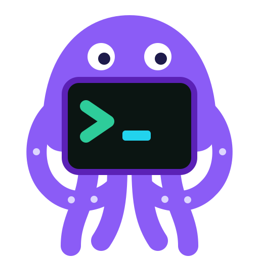
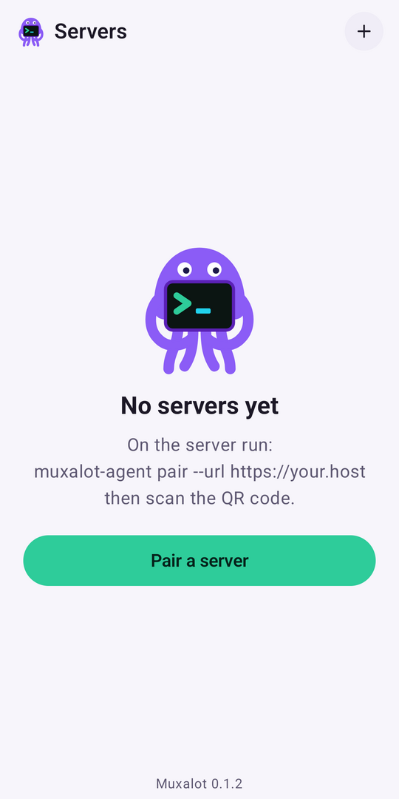
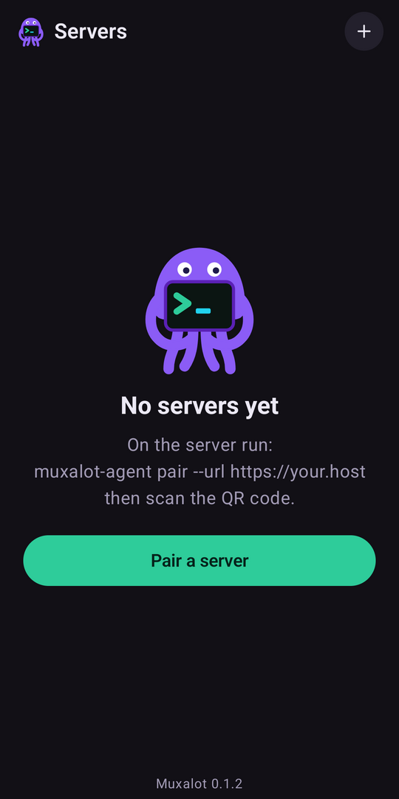

Muxalot
A remote terminal for Android that streams from your own Linux server. Every tab is a tmux session, so nothing is lost when the connection drops.
Open source under the MIT license. The supporter edition is in closed testing on Google Play: join the test, then open the listing.


Built for people who live in tmux
Sessions that survive
Sessions are real tmux sessions on your server. Lose signal, switch networks, close the app: reconnect and you are back where you were.
Keys, not passwords
Each phone generates a key pair in the Android Keystore. The private key never leaves the device, and every request is signed. Nothing to steal from the server.
A real keyboard
Esc, Tab, sticky Ctrl and Alt, arrows, function keys and a shortcut fan you can edit. Hardware keyboards work too.
Clipboard and files
Copy from tmux or vim to your phone with OSC 52, and browse, upload and download files from the server.
Your server only
No account, no cloud relay, no analytics. The app talks to the server you point it at and nothing else.
Open source
MIT licensed. Read the code, build it yourself, or send a pull request.
How it works
Android app <-> reverse proxy (TLS) -> muxalot-agent (loopback) -> PTY -> tmux- Install the agent on a Linux server. It asks which Unix user to run as (your own account by default; root is refused) and starts a systemd service.
- Put it behind a TLS reverse proxy such as Caddy, nginx or Apache.
muxalot-agent proxy --type caddy --domain your.hostprints a working snippet. It must pass WebSockets and must not rewrite paths. - Run
muxalot-agent pair --url https://your.hostas that same user, scan the QR code in the app, and you are connected.
curl -fsSL https://raw.githubusercontent.com/muxalot/muxalot/main/deploy/install.sh | sudo shFull setup steps, the auth design and the wire protocol are in the README.
Security
- The phone's private key is generated in the Android Keystore and never leaves the device. The server stores public keys only, so there is no password or token to steal.
- Every request, including the WebSocket upgrade, is signed. A signature is valid for 60 seconds and each nonce works once, so captured requests cannot be replayed.
- Pairing codes are single use, expire in 10 minutes and are rate limited per IP. Unauthenticated requests get a bare 404.
- The agent refuses to run as root, and there is no cloud relay: the app talks only to your server.
- Lost a phone?
muxalot-agent revoke <id>cuts it off.
Get release updates
New versions and Play Store news. No spam, unsubscribe any time.
Your email is used only for Muxalot updates. See the privacy policy.
Support the project
Muxalot is free and stays free. If it saves you time, the supporter edition on Google Play (closed testing) and GitHub sponsorship help fund development.